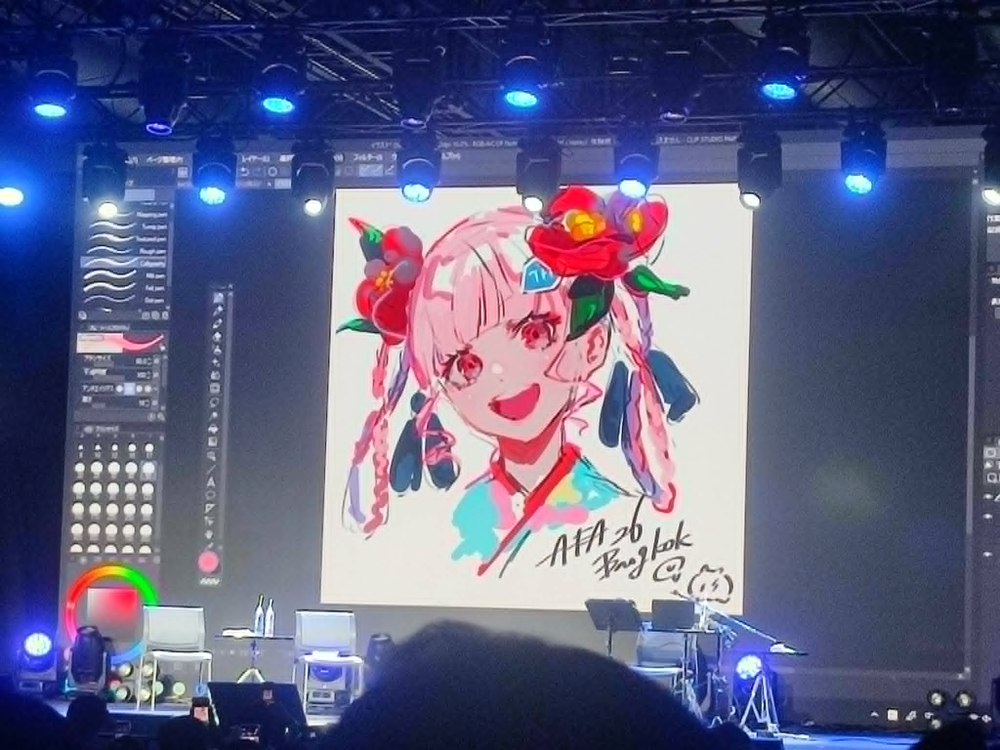
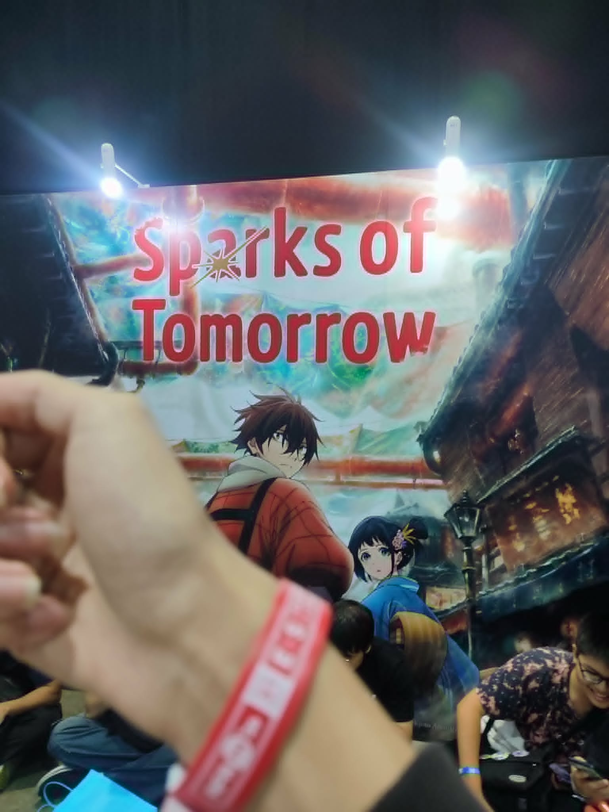
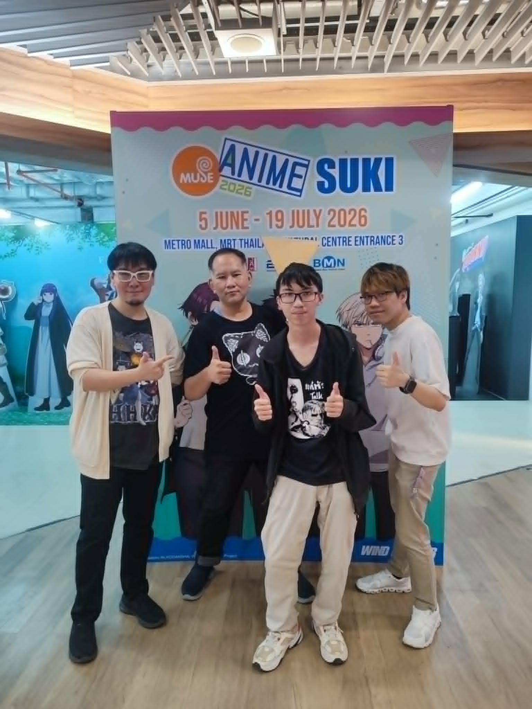

งานครบรอบ2ปีของเกม wuthering waves จัดขึ้นที่สยามสเคปโดยในงานจะมีการจัดกิจกรรมมากมาย ไม่ว่าจะเป็น กิจกรรมตามธีมเมือง กิจกรรมบนเวทีมากมาย

งาน AFATH26 ณ วันที่ 30 พฤษภาคม จัดขึ้นที่การศูนย์ประชุมเเห่งชาติสิริกิติ์ โดยในรูปจะเป็นEvent Next Stageของอาจารย์LAMที่จะมาวาดรูปสดโดยใช้เวลาเพียงเเค่30นาที

งาน AFATH26 ณ วันที่ 31 พฤษภาคม จัดขึ้นที่การศูนย์ประชุมเเห่งชาติสิริกิติ์ โดยในรูปภาพจะเป็นEvent Next Stage การฉายอนิเมะก่อนฉายจริงจำนวน2ตอนของเรื่อง Sparks of tomorrow เเละมีเเขกรับเชิญคุณ Yuma Uchida ที่พากย์เป็นพระเอกของเรื่องมาเป็นguastพูดคุย

งาน muse anime suki 2026 จัดที่ศูนย์วัฒนธรรมเเห่งประเทศไทย ได้เชิญผู้จัดรายการเเห่หัว talk ซึ่งประกอบไปด้วยช่อง Pochi Pochi, Nergal Near, อ่าน ดู young โดยเรียกรูปเเบบการจัดบนเวทีว่า "เเห่หัว talk on stage"